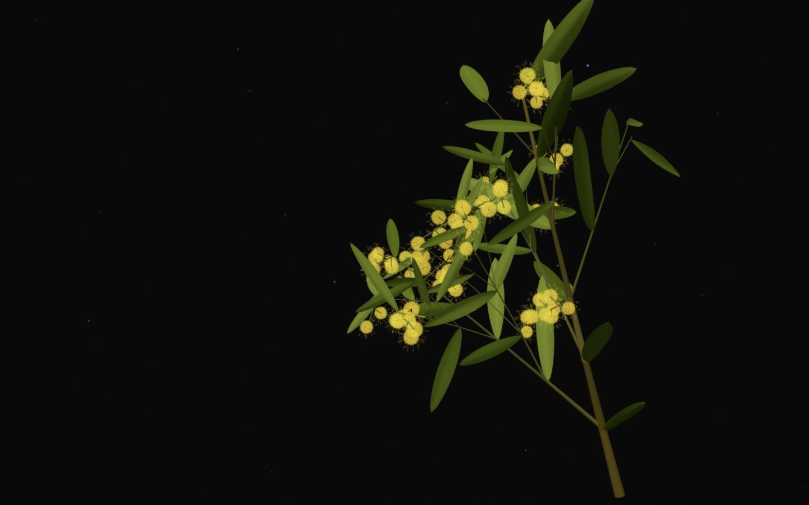

The 3D branch could not open.
A still Golden Wattle is shown instead.
Design
WATL is represented by a living Golden Wattle branch. It begins as a young shoot near the lower edge, rises with a slight diagonal lean, extends slender lateral twigs, and unfolds long narrow green phyllodes. Compact olive buds hang in multi-head axillary strings on fine stems. Those heads can be opened into dense spherical yellow pom-poms as their five-part florets separate and hundreds of fine stamens extend. Stars occupy several real depths, so turning the branch also changes the surrounding space.
Use the arrow keys to rotate the branch, plus and minus to zoom, Enter or Space to finish its growth and then open every remaining bud, and Home to reset the view.
The branch first rises from a young shoot, grows lateral twigs, and unfolds long lanceolate phyllodes. Strings of buds then appear along the mature branchlets. After maturity, move across it to open nearby buds beneath your pointer. Click or tap a bud to open it directly; opened flowers stay open. Drag to orbit, and scroll or pinch to zoom.
Growing the 3D Golden Wattle branch.